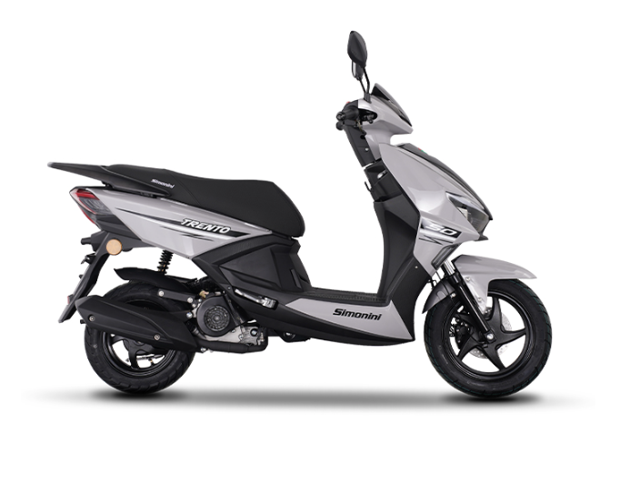
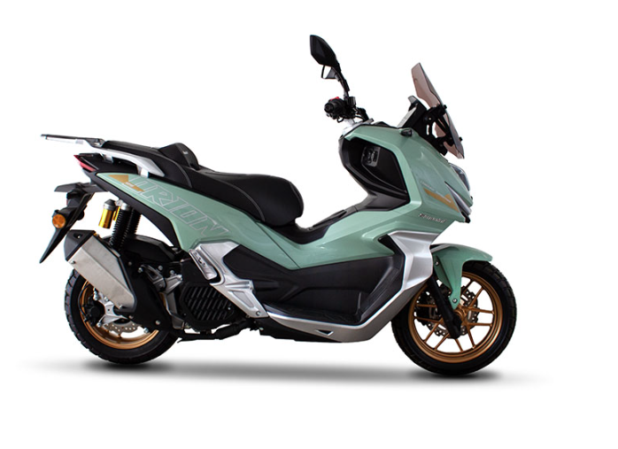
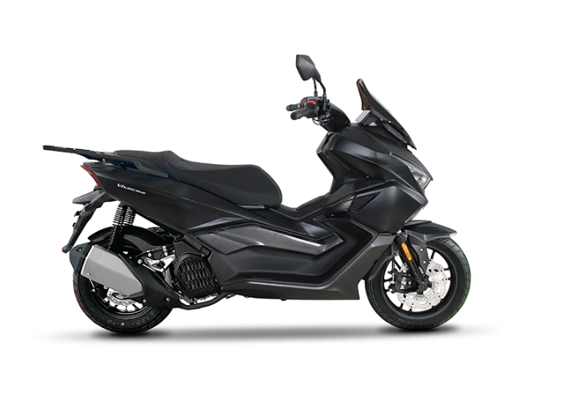
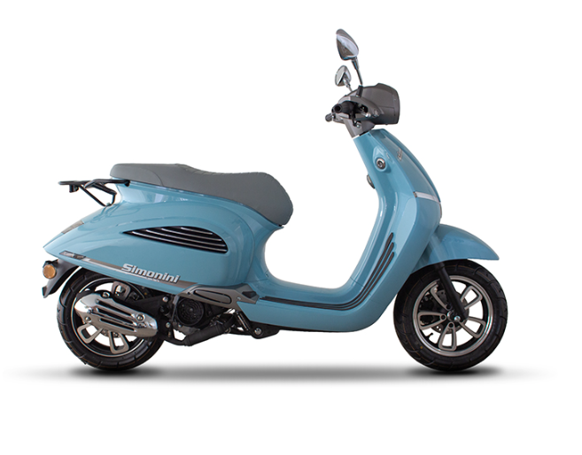
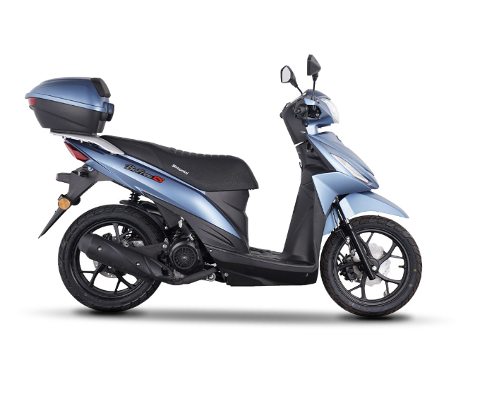
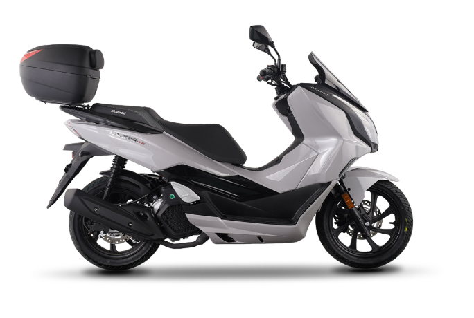

Ανακαλύψτε scooter 50cc και 125cc που οδηγούνται χωρίς δίπλωμα μοτοσυκλέτας. H ιδανική λύση για την καθημερινή σας κίνηση στην πόλη, χωρίς εξετάσεις και περιττή γραφειοκρατία.
Επιλέξτε την κατηγορία που σας ταιριάζει με ή χωρίς δίπλωμα μοτοσυκλέτας.
Το Trento 50 οδηγείται χωρίς δίπλωμα μοτοποδηλάτου, με μόνη προϋπόθεση την ελάχιστη ηλικία.*
Με δίπλωμα αυτοκινήτου (κατηγορία Β) οδηγείτε scooter έως 125cc χωρίς εξετάσεις μοτοσυκλέτας.*
Για όσους θέλουν παραπάνω άνεση και απόδοση, απαιτείται δίπλωμα μοτοσυκλέτας.*
* Ισχύουν οι προβλεπόμενες προϋποθέσεις ανά κατηγορία. Επικοινωνήστε μαζί μας για αναλυτική ενημέρωση.

«Το μικρό που φέρνει πρακτικότητα και ευκολία»
| Κινητήρας | Τετράχρονος, Αερόψυκτος |
| Κύλινδροι / Βαλβίδες | 1 / 2 |
| Τροφοδοσία | EFI (Delphi) |
| Εκκίνηση | Μίζα - Μανιβέλα |
| Ροπή | 2,8 Nm / 5.700 rpm |
| Ρεζερβουάρ | 5 L |
| Κατανάλωση | 2,7 L / 100km (WMTC3) |
| Διαστάσεις (ΜxΠxΥ) | 1860 x 660 x 1130 mm |
| Απόσταση Τροχών | 1270 mm |
| Ύψος Σέλας | 760 mm |
| Βάρος (Πλήρες Υγρών) | 85 kg |
| Φρένα Εμπρός | Δίσκος 190mm |
| Φρένα Πίσω | Ταμπούρο 110mm |
| Εμπρόσθια Ανάρτηση (Διαδρομή/Διάμετρος) | Τηλεσκοπικό Πιρούνι (75mm / 31mm) |
| Οπίσθια Ανάρτηση | Μονό Αμορτισέρ |
| Εμπρόσθιο Ελαστικό | 90/90-12 |
| Οπίσθιο Ελαστικό | 90/90-10 |
4 μοντέλα, ένα χωρίς εξετάσεις μοτοσυκλέτας

«Ο αστερισμός που σε οδηγεί»
| Κινητήρας | Τετράχρονος, Υγρόψυκτος, 125cc |
| Κύλινδροι / Βαλβίδες | 1 / 4 |
| Τροφοδοσία | EFI (BOSCH) |
| Ισχύς | 14,5 ps / 8.500 rpm |
| Ροπή | 12,3 Nm / 6.500 rpm |
| Κατανάλωση | 2,6 L / 100km (WMTC3) |
| Ρεζερβουάρ | 10,5 L |
| Διαστάσεις (ΜxΠxΥ) | 2000 x 810 x 1330 mm |
| Μεταξόνιο | 1330 mm |
| Βάρος (Πλήρες Υγρών) | 145 kg |
| Φρένα Εμπρός | Δίσκος 240mm + ABS, διπίστονη δαγκάνα (Ø25) |
| Φρένα Πίσω | Δίσκος 220mm + ABS |
| Εμπρόσθια Ανάρτηση | Τηλεσκοπικό Πιρούνι |
| Οπίσθια Ανάρτηση | Δύο Αμορτισέρ με εξωτερικό δοχείο αζώτου |
| Εμπρόσθιο Ελαστικό | 110/80-14 |
| Οπίσθιο Ελαστικό | 130/70-13 |

«Ζήσε την πόλη» — οδηγήστε 125άρι χωρίς δίπλωμα μοτοσυκλέτας, χωρίς εξετάσεις
| Κινητήρας | Τετράχρονος, Υγρόψυκτος |
| Τροφοδοσία | EFI (BOSCH) |
| Ισχύς | 11,5 ps / 8.500 rpm |
| Ροπή | 11 Nm / 6.500 rpm |
| Εκκίνηση | Μίζα |
| Ρεζερβουάρ | 11,5 L |
| Κατανάλωση | 2,5 L / 100km (WMTC3) |
| Διαστάσεις (ΜxΠxΥ) | 1960 x 810 x 1200 mm |
| Απόσταση Τροχών | 1410 mm |
| Ύψος Σέλας | 790 mm |
| Βάρος (Πλήρες Υγρών) | 147 kg |
| Φρένα Εμπρός | Δίσκος 260mm, διπίστονη δαγκάνα + ABS |
| Φρένα Πίσω | Δίσκος 220mm, διπίστονη δαγκάνα + ABS |
| Εμπρόσθια Ανάρτηση (Διαδρομή/Διάμετρος) | Τηλεσκοπικό Πιρούνι (90mm / 33mm) |
| Οπίσθια Ανάρτηση (Διάμετρος) | Δύο Αμορτισέρ με ρύθμιση προφόρτισης (37mm) |
| Εμπρόσθιο Ελαστικό | 110/70-14 |
| Οπίσθιο Ελαστικό | 130/70-13 |

«Διαχρονικό στυλ, προσεγμένη αισθητική, καθημερινή πρακτικότητα»
| Κινητήρας | Τετράχρονος, Αερόψυκτος, 124cc |
| Κύλινδροι / Βαλβίδες | 1 / 2 |
| Τροφοδοσία | EFI |
| Ισχύς | 9,4 ps / 7.500 rpm |
| Ροπή | 9,7 Nm / 6.000 rpm |
| Κατανάλωση | 2,0 L / 100km (WMTC3) |
| Ρεζερβουάρ | 6,6 L |
| Διαστάσεις (ΜxΠxΥ) | 1900 x 720 x 1205 mm |
| Μεταξόνιο | 1350 mm |
| Βάρος (Πλήρες Υγρών) | 108 kg |
| Φρένα Εμπρός | Δίσκος 190mm, τριπίστονη δαγκάνα |
| Φρένα Πίσω | Δίσκος 190mm + CBS, διπίστονη δαγκάνα (Ø30) |
| Εμπρόσθια Ανάρτηση (Διαδρομή) | Τηλεσκοπικό Πιρούνι (80mm) |
| Οπίσθια Ανάρτηση | Μονό Αμορτισέρ, ρυθμιζόμενη προφόρτιση |
| Εμπρόσθιο Ελαστικό | 120/70-12 |
| Οπίσθιο Ελαστικό | 120/70-12 |

«Κινήσου ελεύθερα»
| Κινητήρας | Τετράχρονος, Αερόψυκτος, 125cc |
| Κύλινδροι / Βαλβίδες | 1 / 2 |
| Τροφοδοσία | EFI |
| Ισχύς | 10 ps / 9.000 rpm |
| Ροπή | 9,5 Nm / 6.000 rpm |
| Ρεζερβουάρ | 5,9 L |
| Διαστάσεις (ΜxΠxΥ) | 1835 x 670 x 1100 mm |
| Μεταξόνιο | 1255 mm |
| Βάρος | 99 kg (Κενό) |
| Φρένα Εμπρός | Δίσκος |
| Φρένα Πίσω | Δίσκος + CBS |
| Εμπρόσθια Ανάρτηση | Τηλεσκοπικό Πιρούνι |
| Οπίσθια Ανάρτηση | Μονό Αμορτισέρ |
| Εμπρόσθιο Ελαστικό | 80/90-14 |
| Οπίσθιο Ελαστικό | 90/90-14 |

«Έλξη από την πρώτη ματιά»
| Κινητήρας | Τετράχρονος, Υγρόψυκτος |
| Διάμετρος x Διαδρομή | 63 x 57,9 |
| Κύλινδροι / Βαλβίδες | 1 / 4 |
| Τροφοδοσία | EFI (BOSCH) |
| Ισχύς | 18,5 ps / 8.500 rpm |
| Ροπή | 16,5 Nm / 6.500 rpm |
| Ρεζερβουάρ | 9,3 L |
| Διαστάσεις (ΜxΠxΥ) | 1980 x 745 x 1155 mm |
| Μεταξόνιο | 1310 mm |
| Ύψος Σέλας | 790 mm |
| Βάρος | 130 kg (Κενό) |
| Φρένα Εμπρός | Δίσκος 220mm |
| Φρένα Πίσω | Δίσκος 220mm |
| ABS | Δικάναλο BOSCH |
| Εμπρόσθια Ανάρτηση (Διαδρομή) | Τηλεσκοπικό Πιρούνι (95mm) |
| Οπίσθια Ανάρτηση | Δύο Αμορτισέρ |
| Εμπρόσθιο Ελαστικό | 100/80-14 |
| Οπίσθιο Ελαστικό | 120/70-14 |
Επισκεφθείτε μας στο κατάστημα για test ride και αναλυτική ενημέρωση χωρίς καμία δέσμευση.